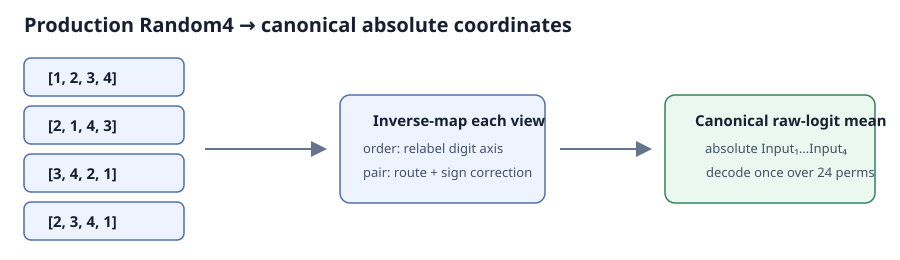

SNU AI Challenge · GeekSeek · 2026
Structured Scene Reordering with Multimodal LLMs
8th PlaceTurning multimodal reasoning into a constrained engineering pipeline: valid permutation decoding, consistent frame coordinates, and a single averaged LoRA adapter for the official submission.

- Final placement
- 8th
- Input frames
- 4
- Candidate orders
- 24
A structured output contract
Given a sentence and four shuffled frames, the system must return each input frame’s chronological rank. Chronological sequence and per-input rank are inverse permutations; confusing them can invalidate an otherwise correct prediction. The implementation explicitly converts between the two representations and formats the submission through a shared utility.
Implementation & evidence: Rank and chronological-order conversion
Reasoning with a constrained decoder
The Qwen3.5-27B model uses LoRA adaptation and structured readouts: six frame-pair comparisons and four chronological slots. Their evidence scores the 24 possible orders, and exhaustive decoding selects one valid permutation. This gives the output a useful guarantee—each frame appears exactly once—rather than depending on free-form text to obey the task schema.
Implementation & evidence: Structured readout and training
Aggregating views in the same coordinates
Random4 inference evaluates four input-image orderings. Before averaging raw logits, each view is mapped back to the original frame identities; otherwise the same output position would refer to different images in different views. One decoder then operates on the combined evidence. The repository tests permutation mappings and validates the final submission schema.
Implementation & evidence: Canonical aggregation · Permutation regression checks
Accuracy without another inference ensemble
The final-selected Exp43 adapter averages nine language-LoRA snapshots from the same training trajectory in CPU float32. It remains one adapter at inference, so this parameter-space averaging adds no forward passes. Temporal-gap supervision and local hard-negative ranking belong to training. Crop-based test-time augmentation is documented separately as post-competition work.
Implementation & evidence: Exp43 Full-SWA · Post-competition boundary
Result and engineering takeaway
GeekSeek finished eighth overall. The repository records 0.91463 as the official final-selected private score; the higher late Crop-TTA score is not an official competition result. The main engineering lesson is that representation contracts, aggregation coordinates, and reproducible artifact selection are as consequential as the model choice.
Implementation & evidence: Official result and release